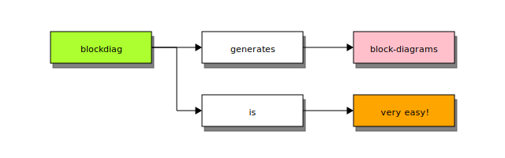

React App Container
Table of Contents

Figure 1. Docker architecture
A byteframe
Issues / Challenges
Docarized app doesn work on localhost, use Docker IP http://172.17.0.2:8080
|
Have issues running with docker-compose
 better use better use Makefile with docker commands
|
Setting up aws named profile on images
-
Seems like setting up environment variables alone do not work
-
Had to create create credential file to work
Unable to access the b2c webapp running inside docker container on localmachine
docker inspect and docker ps shows port 8080is exposed still… doesnt work
Tries all these URLs
Docker IP
docker inspect --format "{{.NetworkSettings.IPAddress }}" 2ae459506f96
ERROR: curl 172.17.0.4:8080 fails
-
run a sample react app in container
-
docker run -p 80:80 nginxseems to work fine -
docker run -p 8000:8000 -it python:3.7-slim python3 -m http.server --bind 0.0.0.0
Open docker bugs/issues
-
https://github.com/docker/for-win/issues/3214
- How I tested it?
-
Run
docker-composeand normaldockercommands onbashusingMakefileThen, watch the output ofdocker ps